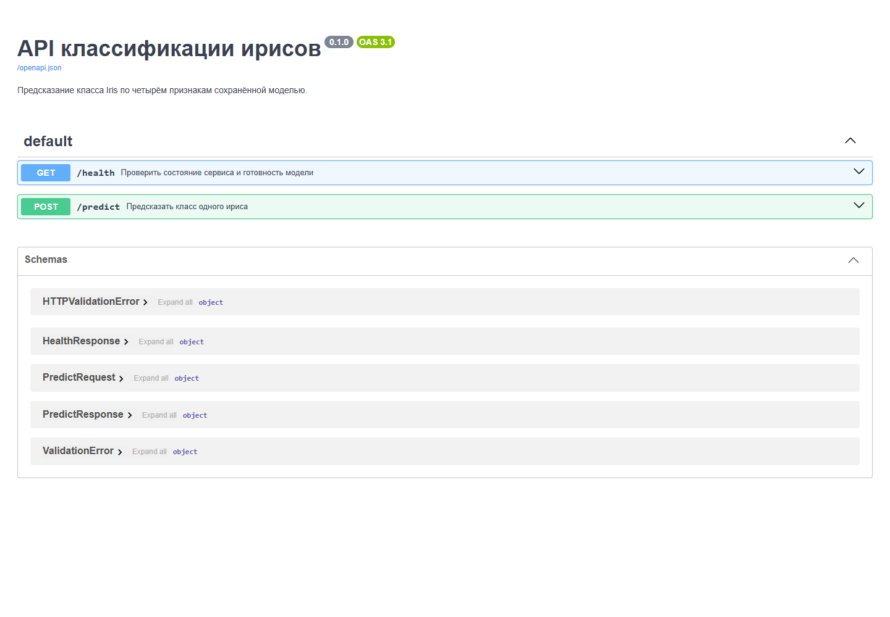

<!doctype html><html lang="ru"><meta charset="utf-8"><title>Практика 3 · Swagger UI</title><style>*{box-sizing:border-box}body{margin:0;background:#eef2f6;color:#152536;font-family:Segoe UI,Arial,sans-serif}
main{max-width:1360px;margin:36px auto;padding:36px 42px;background:#fff;border-top:8px solid #245f90;border-radius:10px}
.label{font-size:18px;font-weight:600;letter-spacing:1px;color:#245f90}h1{font-size:34px;margin:14px 0 16px}
.description{font-size:21px;line-height:1.5;margin-bottom:20px}.metadata{font-size:17px;color:#45576a;line-height:1.55}
h2{font-size:22px;margin:25px 0 12px}pre{white-space:pre-wrap;overflow-wrap:anywhere;margin:0;padding:20px 22px;
font:19px/1.55 Consolas,monospace;background:#f3f6f9;border:1px solid #cbd5df;border-radius:6px}
footer{font-size:17px;margin-top:26px;line-height:1.5;color:#45576a} img{max-width:100%;display:block;border:1px solid #cbd5df;margin-top:24px}</style><main><div class="label">РАЗРАБОТКА И ИНТЕГРАЦИЯ · ПРОВЕРКА В БРАУЗЕРЕ</div><h1>Практика 3 · Swagger UI</h1><div class="metadata">Git: d4b74130073e0a5e867cf2a77102bfb8375f1ba7<br>Снимок: 2026-10-04T21:48:48.467731+03:00<br>URL: http://127.0.0.1:8087/docs</div><footer>В карточку включён снимок настоящего интерфейса браузера. Исходный PNG и его метаданные сохранены рядом с этой страницей.</footer></main></html>